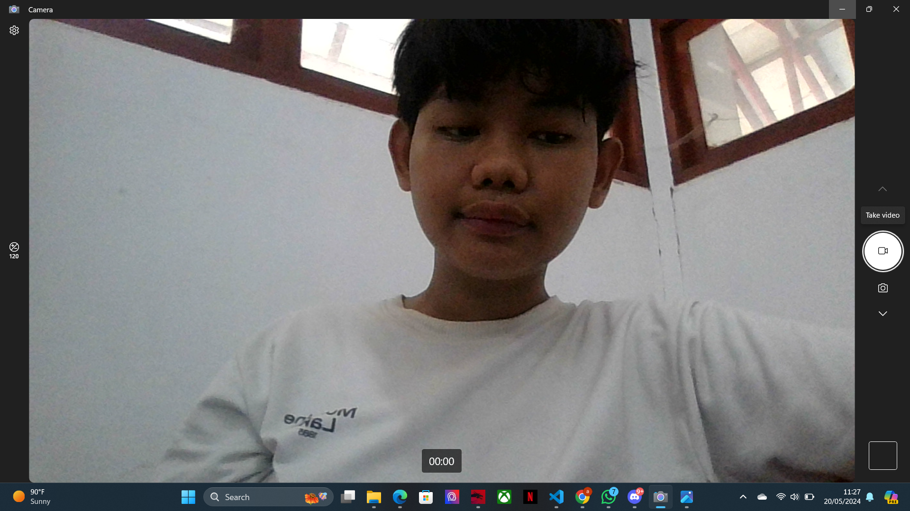

Nama : Nabil Muflif Malape
NIM : H071231036
Prodi :Sistem Informasi
Fakultas Matematika dan ilmu pengetahuan alam
Berikut adalah foto saya
Saya memiliki makanan favorit yaitu :
Lagu favorit saya berjudul birds of feather, play lah lagu berikut untuk mendengarnya